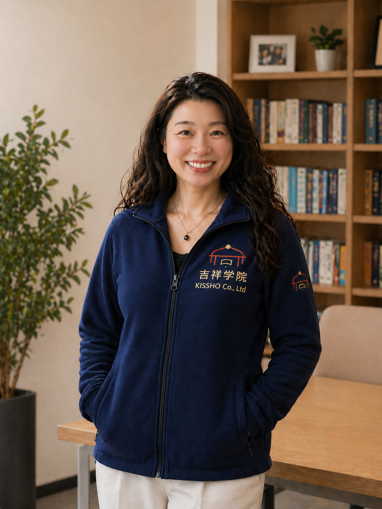
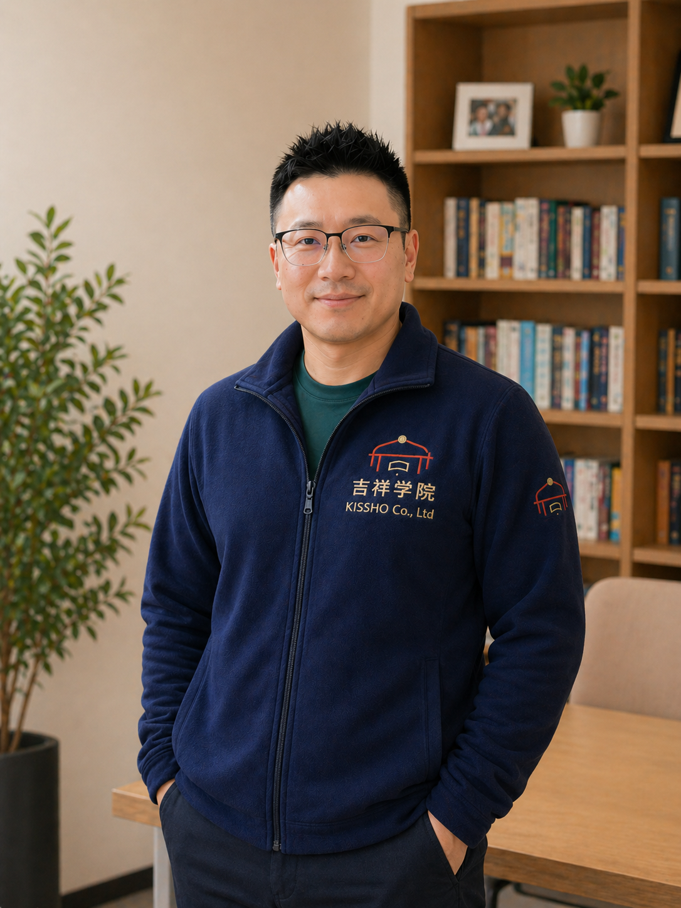

吉祥书院
陪伴每一个家庭，走进最适合的国际学校。
"我们不是旁观者，而是和您走在同一条路上的家长。"
2019 年，我们带着四个孩子从上海来到东京。孩子们从德威国际学校（Dulwich College Shanghai）转入清泉国际学校（Seisen International School），选校、备考、面试、入学——每一步都亲身走过，也切身体会过其中的迷茫与焦虑。
东京的国际学校信息分散，中文资料极少，华人家庭往往只能靠口口相传做判断。我们想把自己走过的路变成一张清晰的地图，让后来的家庭少走弯路。
Betty 深耕教育行业超过十年，亲自负责每一个家庭的咨询、访校与辅导；Jerry 用产品思维和数据能力搭建了覆盖全东京国际学校的课程知识库与选校工具——一个懂教育，一个懂技术，刚好互补。
我们全心对待每一个家庭，不推荐最贵或最有名的，只帮您找到最适合孩子的那一所。这条路，我们陪您一起走。
创始团队

Betty
英国杜伦大学（英国前五）研究生毕业，回国后在阿里巴巴负责在线教育业务的运营与增长策略，在教育领域深耕超过十年，深刻理解教育产品设计与用户需求。在过往工作经历中建立了与众多学校的招生团队长期稳定的沟通关系，对IB、A-Level、AP等主流课程体系及其入学评估标准有系统深入的研究。
目前是四个孩子的妈妈，前上海德威国际学校（Dulwich College Shanghai）、现清泉国际学校（Seisen International School）学生家长，孩子们均一次通过入学考核。
每一次咨询我们都会全力以赴，每一个家庭我们都会用心对待。
在吉祥负责客户咨询、访校陪同、笔试面试辅导与学校对接等核心服务交付。

Jerry
巴黎大学数学与计算机应用科班毕业，回国后深耕移动互联网十余年，经营的企业年营业额超过30亿人民币。
2019年回归家庭后选择定居东京，将多年积累的商业经验与对教育的思考相结合。用产品思维打磨每一个服务环节，用数据驱动和系统化能力搭建全东京国际学校的课程体系与知识要点库，为每一个家庭量身定制匹配的方案。
在吉祥负责课程体系研发、IT产品设计与企业经营管理。
公司信息
TOSHIMA-KU, Tokyo 171-0031, Japan